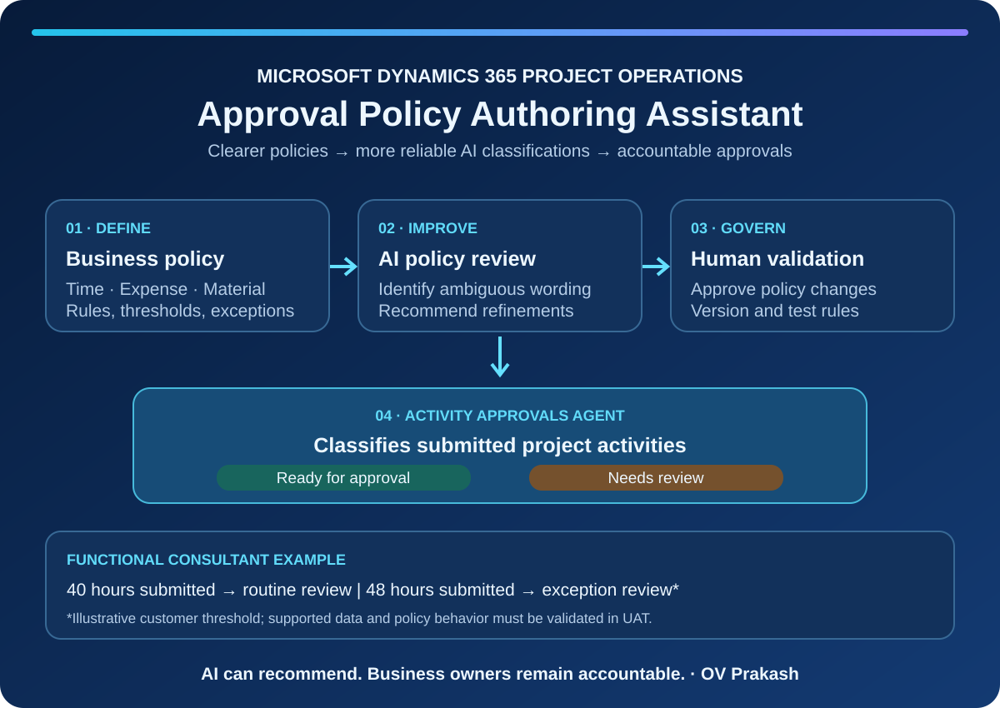

- 1. Understand the capability and its boundaries
- 2. Discovery workshop: identify process owners and decision rights
- 3. Inventory existing policy documents and data
- 4. Confirm technical prerequisites and deployment model
- 5. Configure the Approvals Agent using Microsoft's documented wizard
- 6. Write a testable policy: illustrative time-entry example
- 7. Write expense and material policies
- 8. Review and refine with the Policy Authoring Assistant
- 9. Upload organization-wide and project-level policies
- 10. Execute functional and UAT test cycles
- 11. Verify security, approvals and downstream finance
- 12. Deployment, hypercare and operating governance
- 13. Functional consultant deliverables and acceptance checklist
1. Understand the capability and its boundaries
The November 2026 Project Operations release introduces the Policy Authoring Assistant, which reviews policy documents and suggests improvements intended to make the Activity Approvals Agent more accurate and reliable. The Approvals Agent is documented as a production-ready preview capability; verify availability, licensing, regional constraints, preview terms and supported environment versions before committing to production.
The agent's classification is Ready for approval or Needs review. It does not replace the accountable human approver or the supported approval action.
2. Discovery workshop: identify process owners and decision rights
Bring together the PMO, project managers, resource managers, Finance, HR/payroll where relevant, compliance, IT security and the Dynamics 365 solution owner. Map the current approval process from submission to financial actuals and exception resolution.
Questions to ask the customer
- Who owns time, expense and material policies today, and who can change them?
- Who approves each transaction type, and who acts as backup?
- Are policies global, business-unit-specific, project-specific or contract-specific?
- What are the most common rejection reasons and recurring exceptions?
- Are approvals tied to project team membership, manager hierarchy or delegated authority?
- What are the SLA and escalation rules for pending approvals?
- What evidence must be retained for internal and external audit?
- What are the consequences of an incorrect approval: payroll, project costing, customer billing or compliance?
Deliverable: signed-off process map, policy owner matrix, scope boundary and exception register.
3. Inventory existing policy documents and data
Collect the approved SOPs and rulebooks for time, expense and material submissions. Capture document owner, effective date, revision, applicable legal entity/business unit, project types, thresholds, exclusions and supporting evidence.
| Policy area | Inputs to confirm | Customer question |
|---|---|---|
| Time | Hours, date, project, task, resource, overtime | Are daily and weekly limits different by region or contract? |
| Expense | Category, amount, receipt, currency, project | Which categories need preapproval or receipts? |
| Material | Item, quantity, project, task, supporting record | Which material usage scenarios require special review? |
| Exceptions | Overrides, approvers, reason codes | Who can authorize an exception and how is it evidenced? |
Deliverable: policy inventory and traceability matrix from each business requirement to a test case.
4. Confirm technical prerequisites and deployment model
Confirm whether the customer uses Project Operations Core or Project Operations Integrated with ERP. Check the installed Project Operations solution version, applicable preview terms, agent availability and required licensing. Microsoft documents the Approvals Agent in environments on version 4.140.0.239 or later; the November 2026 Integrated with ERP release lists Dataverse 4.173.1.38 and Finance 10.0.49. The Policy Authoring Assistant's precise UI entry point and enablement experience should be validated in the customer's environment rather than assumed.
Prepare a non-production environment, a named agent identity, the required Time and Approval Agent security privileges, connections, Copilot Studio access and deployment owner. Review data residency, DLP policies and support procedures.
Questions to ask the customer
- Which environments are available for configuration, UAT and production?
- Who will own the agent identity, connections and credentials?
- Which security team must approve Dataverse permissions and DLP?
- Are policy documents allowed to contain employee, contract or pricing information?
- Which release-management gate is required for AI-related changes?
5. Configure the Approvals Agent using Microsoft's documented wizard
The following is the documented Approvals Agent deployment path, not a claimed click-by-click setup for the separate Policy Authoring Assistant:
- Sign in to Power Platform admin center with an appropriate administrator account.
- Navigate to Copilot → Dynamics 365 or open the Agent Deployment Tool.
- Select the target environment, then choose Add for the Approvals Agent.
- Review the prerequisites and identify the user account under which the agent operates.
- Create and select the required connection references, using the intended agent identity.
- Activate the approvals agent trigger flows through the wizard.
- Open Copilot Studio → Agents, locate the Approvals Agent and confirm that it is published.
- Complete the deployment wizard and document the result.
- In Project Operations, use Project Parameters → Feature Control to enable the Time and Expense Agent where the feature is available.
- Confirm the Time and Expense Agent tab appears in Project Parameters.
Validation: verify connections, flow status, agent publication, security privileges and the ability to access the policy configuration area. Record screenshots and environment/version details.
6. Write a testable policy: illustrative time-entry example
Microsoft recommends writing a policy document as a numbered list of rules. If a submitted record violates one or more applicable rules, the agent can classify it as Needs review. Only use attributes available to the agent in the documented data model; do not assume that planned assignment hours, overtime authorization or contract terms are automatically accessible.
Illustrative customer rulebook — Time entries
- Each submitted time entry must reference an eligible project and the appropriate project task, where those fields are available for evaluation.
- For this example, entries exceeding 40 hours in a week require additional review. Implement this only if the agent can evaluate the relevant weekly aggregate; otherwise use a supported upstream validation or manual control.
- Entries dated after the customer-defined project closure cutoff require review.
- Where an approved exception is not available to the agent, classify the submission for manual review rather than assuming an exception exists.
- Do not infer missing information; route ambiguous cases to a human reviewer.
| Scenario | Submitted | Expected treatment |
|---|---|---|
| T01 | 40 hours, valid project/task | Ready for approval if all supported rules pass |
| T02 | 48 hours, threshold exceeded | Needs review if aggregate threshold is supported |
| T03 | Missing required task | Needs review or upstream rejection, per supported configuration |
| T04 | Approved overtime exception | Human review unless exception evidence is accessible and tested |
All figures and policy conditions above are illustrative customer requirements, not Microsoft defaults.
7. Write expense and material policies
Expense policy example
- Expense claims must use an approved category and eligible project.
- Claims above the customer's ₹5,000 illustrative threshold require additional review.
- Missing receipt evidence must be routed for review if the agent has access to a reliable receipt indicator.
- Duplicate or suspicious claims must not be auto-cleared solely because a receipt is attached.
Material policy example
- Material usage must reference an eligible project and supported material category.
- Quantities above the customer's approved tolerance require additional review where quantities and tolerance can be evaluated.
- Missing supporting evidence or unusual consumption must be escalated.
Customer questions: What expense limits vary by grade or country? What constitutes a valid receipt? Are material tolerances item-specific? Which exceptions are contractual? Can the agent actually see the required evidence? What must remain a manual check?
8. Review and refine with the Policy Authoring Assistant
Use the Policy Authoring Assistant where exposed in the customer's supported environment to review the draft policy document. Microsoft confirms that it provides feedback on changes intended to improve the Activity Approvals Agent's reliability; it does not document a universal fixed menu path for every deployment.
- Provide the approved draft policy through the supported authoring experience.
- Review suggestions for ambiguous terms, missing thresholds, contradictory rules and unhandled exceptions.
- Record each recommendation in a decision log: accept, modify or reject, with rationale.
- Have the business owner and compliance/security stakeholders review material changes.
- Publish only the formally approved policy version.
- Retain the previous policy version and a rollback plan.
Questions: Who has final authority to approve wording? What changes are considered material? How will policies be versioned and retested after revisions?
9. Upload organization-wide and project-level policies
In Project Operations, use the Time and Expense Agent tab on Project Parameters to upload organization-wide policy documents for time, expense and material records. Where required, attach project-level policies to individual projects using the supported configuration.
Microsoft documents that a project-level policy overrides the organization-wide policy for the same transaction type. If neither level has a policy for that type, the agent does not classify those records. Therefore, explicitly test policy precedence and missing-policy behavior.
Customer questions
- Should a project override the global rule entirely, or is a combined policy document needed?
- Who may create project-specific policies?
- How will the team identify projects without the required policy?
- What is the change process when contract terms are amended?
10. Execute functional and UAT test cycles
Submit representative time, expense and material records in UAT. The agent queues eligible records for classification; review the results in the Approvals Agent area, including the Time entries reviewed by Agent page where available.
| Test ID | Condition | Expected evidence |
|---|---|---|
| UAT-01 | Valid routine time | Ready for approval; human approval still required |
| UAT-02 | Policy violation | Needs review and appropriate reason/evidence |
| UAT-03 | Project policy differs from global | Project-level rule used |
| UAT-04 | No policy for record type | No agent classification |
| UAT-05 | Policy revised | Reassign to Agent and verify reevaluation |
| UAT-06 | Agent connection/flow failure | Exception identified; manual fallback available |
| UAT-07 | Unauthorized user attempts approval | Security prevents unauthorized approval |
| UAT-08 | Approved project entry | Downstream actuals validated as applicable |
For every test record, capture expected classification, actual classification, evidence, defect ID, retest result and sign-off. Measure false positives (unnecessary review) and false negatives (missed violations). Test high-risk conditions separately rather than relying on overall accuracy alone.
11. Verify security, approvals and downstream finance
Project approvers need appropriate access and approval authority. Microsoft documents that project-linked approvals generally require project team membership with the Project Approver flag and relevant table access; the Project Approver Admin role can bypass certain validation checks and should be tightly controlled.
Test the actual Approve, Reject and Reassign to Agent actions in the supported UI. Do not manipulate approval status fields directly to simulate approvals. Validate the downstream creation of project actuals and any financial integration or billing impacts for the customer's deployment type.
Customer questions: Who may override a flagged item? Are delegation and backup approvals required? Which role assignments are privileged? Who reviews audit logs and unusual override patterns?
12. Deployment, hypercare and operating governance
Before production, confirm business sign-off, environment readiness, security approval, connection health, approved policy versions, UAT evidence, manual fallback and rollback ownership. Start with a controlled pilot across a limited set of projects and transaction types, then expand based on measured outcomes.
Hypercare dashboard — suggested measures
| Measure | Why monitor it |
|---|---|
| Records classified / eligible records | Agent coverage |
| Needs review rate | Exception volume and policy clarity |
| False positive / false negative counts | Quality of classification |
| Median approval turnaround | Operational improvement |
| Reassignments after policy change | Policy stability |
| Unprocessed queue / failed flows | Operational resilience |
Assign an owner to each KPI and schedule policy reviews after material business or contractual changes. Do not interpret fewer manual reviews as success if high-risk violations are being missed.
13. Functional consultant deliverables and acceptance checklist
- Approved process map and stakeholder RACI
- Policy inventory, version register and decision log
- Requirements-to-rule-to-test traceability matrix
- Environment, license, security and deployment prerequisite checklist
- Sample time, expense and material policy documents
- Approved policy changes and authoring-assistant feedback log
- UAT scripts, expected outcomes, defect tracker and sign-off
- Deployment/rollback checklist and support runbook
- Hypercare dashboard and ongoing policy governance cadence
Official Microsoft references
- November 2026 release notes
- Approvals Agent overview (preview)
- Policy document setup (preview)
- Project-level policy setup (preview)
- Deployment wizard (preview)
- Approvals security
- Approvals workflow
OV Prakash
Enterprise Delivery & Practice Leadership · Microsoft Dynamics 365 · Project Operations · AI Governance